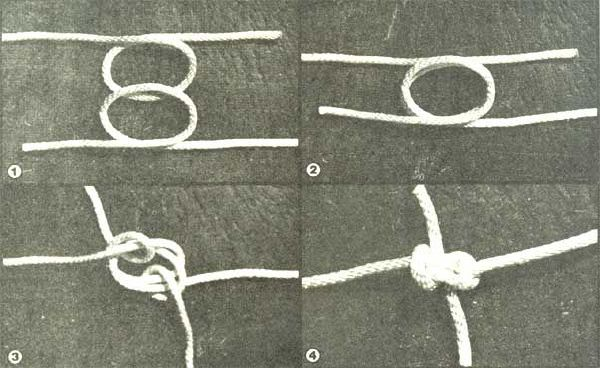

The U.S. Navy's last rigid airship was dismantled in 1941, and its last blimp was deflated in 1962, more than a decade and a halfago. The close of the Navy's lighter-than-air program also ended the use of an extraordinary knot that could be of special value to every boater.
Joe Collins is an able seaman currently sailing aboard the modem container ship, President Madison. Fifty years ago he was an instructor in marlinspike seamanship at the Naval Training Center in Norfolk, Virginia. His students were air-shipmen assigned to the Los Angeles - the Navy's new German-built zeppelin-as well as to the Akron and Macon, the two immense flying aircraft carriers then under construction at the Goodyear-Zeppelin Co.
Collins recollects: "Charles Rosendahl was commander of the Los Angeles. Rigid airships were new to the Navy, and a lot of old-line battleship admirals still hadn't fully accepted either airships or airplanes. The Los Angeles had to prove herself . . . and Lieutenant Commander Rosendahl couldn't afford to take any chances. There was only one knot he allowed me to teach the new airshipmen, either for bending lines together on the airship or for use on the mooring lines. I called it the Rosendahl bend.
"The Los Angeles was 658 feet long and weighed 46 tons . . . but with 2.5 million cubic feet of helium inside her hull she floated in the air as light as a feather and-when she was properly weighed off-one man could hold her in his hands. But she was subject to heavy and unexpected surges in the wind, just the way a ship is in the sea. And as with a ship, the docking operations were the most critical and dangerous part of working with a dirigible. Most of the accidents occurred when the huge machines were being brought in or out of the hangar, or were being tied to the mooring mast. Everyone had to be on his toes. We used the Rosendahl bend because of its superiority to the carrick bend, bowline, or sheet bend, all of which are more likely to jam under a heavy load. The Rosendahl distributed the load evenly throughout the knot and could always be untied in a hurry, even after a sudden surge of the Los Angeles had put tons of extra weight and stress on it.
"After the war, I left the Navy and began sailing on merchant ships. In the past 30 years I've visited just about every deepwater port in the world. Knots are my hobby. I've read every book on knots that I could find and I've never seen the Rosendahl bend in any of them. It's as If it has been forgotten along with the airship . . . and that's a shame, because it's the most useful knot I know for tying two lines together. It's especially good for towing, mooring, or anchor lines, where a heavy strain can jam an ordinary knot and make it almost impossible to untie."
To make the Rosendahl bend, place bights of the two lines together, one on top of the other, so that the bitter ends lead away in opposite directions on outboard sides of the bights (Photos 1 and 2). Then pass each bitter end around its own bight and the other bight, lead them out opposite sides of the knot (Photo 3), and tighten it up (Photo 4). To untie it, simply pull away on the bights that pass over each standing part.
Once you get the hang of it, it's an easy knot to tie (Joe Collins' airshipmen had to learn to do it in the dark) and best of all, you can always untie it. That's as important to the boatman or -woman today as it was 40 years ago when there was a zeppelin on the other end.
|
 LEE & BOB PAINE |
|
|